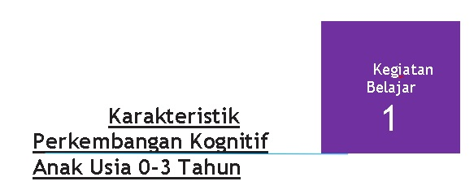

Bahasan pada Kegiatan Belajar 1 adalah mengenai karakteristik perkembangan kognitif dari anak usia 0 hingga 2 tahun.
Berk mendefinisikan kognisi sebagai proses batin dan produk pikiran yang mengarah untuk mengetahui. Ini mencakup semua aktivitas mental berupa mengingat, melambangkan, mengkategorikan, pemecahan masalah, menciptakan, berfantasi, dan bahkan bermimpi. Perkembangan kognitif, kemudian, mengacu pada perkembangan pemikiran dan penalaran anak (Brewer, 2007). Kognitif juga dapat diartikan sebagai proses yang terjadi secara internal pada manusia di dalam pusat susunan syaraf pada saat manusia berpikir. Kemampuan kognitif berkembang secara bertahap, sejalan dengan perkembangan fisik dan otak manusia (Jamaris, 2005). Perkembangan kognitif anak-anak berasal dari perkembangan biologi, interaksi mereka dengan lingkungan dan temuan spontan mereka tentang sesuatu hal (Beaty, 2013).
Tahapan praoperasional ditandai dengan berkembangnya fungsi kognitif dengan ciri utama, yaitu berpikir simbolik, berpikir intuitif, dan egosentris. Pada usia 2-7 tahun anak berpikir intuitif artinya anak memiliki berbagai pengetahuan tetapi tidak tahu bagaimana ia mengetahui hal tersebut. Pada masa ini, konversi dan konsentrasi merupakan kegiatan yang sering dilakukan (Jamaris, 2004). Anak umur 5 tahun biasanya mengalami gagal konservasi dan mengalami masalah seriasi. Kegagalan konservasi ini berkaitan dengan pemusatan yang mana pemahaman anak-anak mengenai kuantitas tetap sama bahkan jika terdapat perubahan ukuran, bentuk, atau dimensinya. Sementara kegagalan konsentrasi berkaitan dengan fokus yang hanya tertuju pada satu aspek atau hal dalam satu waktu (Siegler and Alibali, 2005).
Tahap paling awal perkembangan kognitif terjadi pada waktu bayi lahir sampai sekitar umur 2 tahun. Tahap ini disebut tahap sensorimotor oleh Piaget. Pada tahap sensorimotor, intelegensi anak lebih didasarkan pada tindakan inderawi anak terhadap lingkungannya, seperti melihat, meraba, menjamak, mendengar, membau (mencium). Pada tahap sensorimotor, gagasan anak mengenai suatu benda berkembang dari periode “belum mempunyai gagasan” menjadi “ sudah mempunyai gagasan”. Gagasan mengenai benda sangat berkaitan dengan konsep anak tentang ruang dan waktu yang juga belum terakomodasi dengan baik. Struktur ruang dan waktu belum jelas dan masih terpotong-potong belum dapat disistematisasikan dan diurutkan secara logis.
Inteligensi sensorimotor dipandang sebagai intelegensi praktis yang bermanfaat untuk anak usia 0-2 tahun untuk belajar berbuat terhadap lingkungannya, sebelum ia mampu berpikir apa yang sedang ia perbuat. Anak-anak pada periode ini adalah individu yang suka belajar dan melakukan sesuatu tanpa memahami apa yang sedang ia perbuat. Melalui intelegensi praktis anak belajar tentang sepuluh hal yang sedang ia perbuat, misalnya ketika bayi melakukan latihan dengan lingkungan, mengasimilasikan sensor-sensor motorik dengan bantuan kemampuan yang ia gunakan hingga mencapai untuk memenuhi kebutuhannya. Proses asimilasi dan akomodasi mencapai ekulibrium seperti di atas, dapat dilakukan bayi, hak ia memerlukan pemenuhan lapar dan dahaganya juga bermain dengan benda-benda mainan yang ada di sekitamya (Muhibbin, 2010).
Menurut Piaget, mekanisme perkembangan sensorimotor ini menggunakan proses asimilasi dan akomodasi. Tahap-tahap perkembangan kognitif anak dikembangkan dengan perlahan-lahan melalui proses asimilasi dan akomodasi terhadap skema-skema anak karena adanya masukan, rangsangan, atau kontak dengan pengalaman dan situasi yang baru. Piaget membagi tahap sensorimotor dalam enam periode, yaitu:
Periode 1: Refleks (umur 0-1 bulan)
Periode paling awal tahap sensorimotor adalah periode refleks. Periode ini berkembang sejak bayi lahir sampai sekitar berumur 1 bulan. Pada periode ini, tingkah laku bayi lebih banyak bersifat refleks, spontan, tidak disengaja, dan tidak terbedakan. Tindakan seorang bayi didasarkan pada adanya rangsangan dari luar yang ditanggapi secara refleks.
Periode 2 : Kebiasaan (umur 1-4 bulan)
Pada periode perkembangan ini, bayi mulai membentuk kebiasaan-kebiasaan awal. Kebiasaan dibuat dengan mencoba-coba dan mengulang-ulang suatu tindakan. Refleks-refleks yang dibuat diasimilasikan dengan skema yang telah dimiliki dan menjadi semacam kebiasaan, dari refleks tersebut menghasilkan sesuatu. Pada periode ini, seorang bayi mulai membedakan benda-benda di dekatnya. Ia mulai mengadakan diferensiasi akan macam-macam benda yang dipegangnya. Pada periode ini pula, koordinasi tindakan bayi mulai berkembang dengan penggunaan mata dan telinga. Bayi mulai mengikuti benda yang bergerak dengan matanya. Ia juga mulai menggerakkan kepala ke sumber suara yang ia dengar. Suara dan pengelihatan bekerja bersama. Ini merupakan suatu tahap penting untuk menumbuhkan konsep benda.
Periode 3 : Reproduksi kejadian yang menarik (umur 4- 8 bulan)
Pada periode ini, seorang bayi mulai menjamah dan memanipulasi objek apa pun yang ada di sekitarnya (Piaget dan Inhelder, 1969). Tingkah laku bayi semakin berorientasi pada objek dan kejadian di luar tubuhnya sendiri. Ia menunjukkan koordinasi antara pengelihatan dan rasa jamah (perabaan). Pada periode ini, seorang bayi juga menciptakan kembali kejadian-kejadian yang menarik baginya. Ia mencoba menghadirkan dan mengulang kembali peristiwa yang menyenangkan diri (reaksi sirkuler sekunder). Piaget mengamati bahwa bila seorang anak dihadapkan pada sebuah benda yang dikenal, seringkali hanya menunjukkan reaksi singkat dan tidak mau memperhatikan agak lama. Oleh Piaget, ini diartikan sebagai suatu “pengiyaan” akan arti benda itu seakan ia mengetahuinya.
Periode 4 : Koordinasi Skemata (umur 8 – 12 bulan)
Pada periode ini, seorang bayi mulai membedakan antara sarana dan hasil tindakannya. Ia sudah mulai menggunakan sarana untuk mencapai suatu hasil. Sarana-sarana yang digunakan untuk mencapai tujuan atau hasil diperoleh dari koordinasi skema-skema yang telah ia ketahui. Bayi mulai mempunyai kemampuan untuk menyatukan tingkah laku yang sebelumnya telah diperoleh untuk mencapai tujuan tertentu. Pada periode ini, seorang bayi mulai membentuk konsep tentang tetapnya suatu benda. Dari kenyataan bahwa dari seorang bayi dapat mencari benda yang tersembunyi, tampak bahwa ia mulai mempunyai konsep tentang ruang.
Periode 5 : Eksperimen (umur 12 – 18 bulan)
Unsur pokok pada periode ini adalah anak mulai mengembangkan cara-cara baru untuk mencapai tujuan dengan cara mencoba-coba (eksperimen) bila dihadapkan pada suatu persoalan yang tidak dipecahkan dengan skema yang ada. Anak mulai mencoba-coba dengan trial and error untuk menemukan cara yang baru guna memecahkan persoalan tersebut. Dengan kata lain ia mencoba mengembangkan skema baru. Pada periode ini, anak lebih mengamati benda-benda di sekitarnya dan mengamati bagaimana benda-benda di sekitarnya bertingkah laku dalam situasi yang baru. Menurut Piaget, tingkah anak ini menjadi intelegensi sewaktu ia menemukan kemampuan untuk memecahkan persoalan yang baru. Pada periode ini pula, konsep anak akan benda mulai maju dan lengkap. Konsep ruang anak mulai berkembang dengan mempertimbangkan organisasi perpindahan benda-benda secara menyeluruh bila benda-benda itu dapat dilihat secara serentak.
Piaget melakukan percobaan dan observasi terhadap subjek anak, termasuk anak perempuannya sendiri yang berusia 7 bulan. Ia menyimpulkan bayi di bawah usia 18 bulan, pada umumnya belum memiliki pengenalan tentang objek permanen. Artinya benda yang tidak ia sentuh atau tidak dlihat, maka ia anggap tidak ada, dengan mempertimbangkan fakta bahwa benda itu ada di tempat lain (Muhibbin Syah, 2010)
Periode 6. Representasi (umur 18 – 24 bulan)
Periode ini adalah periode terakhir pada tahap inteligensi sensorimotor. Seorang anak sudah mulai dapat menemukan cara-cara baru yang tidak hanya berdasarkan rabaan fisik dan eksternal, tetapi juga dengan koordinasi internal dalam gambarannya. Pada periode ini, anak berpindah dari periode intelegensi sensorimotor ke inteligensi representatif. Secara mental, seorang anak mulai dapat menggambarkan suatu benda dan kejadian, dan dapat menyelesaikan suatu persoalan dengan gambaran tersebut. Konsep benda pada tahap ini sudah maju, representasi ini membiarkan anak untuk mencari dan menemukan objek-objek yang tersembunyi. Sedangkan dalam konsep ruang, anak mulai sadar akan gerakan suatu benda sehingga dapat mencarinya secara masuk akal bila benda itu tidak kelihatan lagi.
Istilah dalam proses perkembangan kognitif menurut Piaget (Muhibbin Syah, 2010) antara lain adalah (1) Sensori motor yaitu sebuah perilaku terbuka yang tersusun secara sistematis umuk respons lingkungan (barang, orang, situasi, peristiwa); (2) cognitive schema (mengerti kognitif), yaitu perilaku tertutup melalui langkah-langkah kognitif (operasi) yang membantu memahami yang tersirat atau karena terkait yang direspons; (3) Object permanance (ketetapan benda) yaitu anggapan bahwa suatu benda akan tetap ada yang sudah ditinggalkan atau tidak dilihat; (4) asimilation (asimilasi), yaitu proses aktif dalam menggunakan menyetujui untuk merespons lingkungan; (4) Acomodation (akomodasi), yang merupakan aplikasi pertanggungan objek dengan lingkungan yang direspons; dan (5) Equilibrium (ekuilibrium), yaitu keseimbangan antara yang diterima dari lingkungan yang direspons dengan hasil ketetapan akomodasi.
A. KARAKTERISTIK PERKEMBANGAN KOGNITIF ANAK USIA JANIN S.D LAHIR
Perkembangan kogntif janin dan bayi tergantung pada sistem syaraf pada masa janin yang sejalan dengan perkembangan embrio. Pada mingggu ketiga, sel-sel mulai membentuk saluran pembuluh yang berbeda. Neuron yang terbentuk kemudian berkembang menjadi tiga bagian otak yang utama, yaitu (1) forebrain (otak depan), letaknya paling atas; (2) midbrain (otak tengah), letaknya berada di atas hindbrain di bawah forebrain, dan (3) hindbrain (otak belakang) yang letaknya pada bagian bawah forebrain. Sebelum lahir, tiga bagian ini berkembang menjadi lima bagian otak yang sedang berkembang saat bayi dilahirkan.
B. KARAKTERISTIK PERKEMBANGAN KOGNITIF ANAK USIA 1 S.D 12 BULAN
Selama beberapa minggu pertama kehidupan, bayi itu tampaknya hanya tidur, mendengar dan menangis. Ibu atau orang dewasa lainnya harus mengurus kebutuhan bayi. Namun, terlepas dari ketidakberdayaan fisik, bayi yang baru lahir dapat mengembangkan hubungan dengan anggota keluarga dalam hidup mereka. Mereka dapat melihat wajah dan mendengar suara. Bayi itu menanggapi suara-suara dengan memutar kepalanya atau diam untuk mendengarkan. Bayi baru itu mengkomunikasikan kebutuhannya dengan menangis dan menggunakan ekspresi wajah dan gerakan tubuh. Kemudian, tersenyum, mendekut, dan berdegum digunakan untuk menarik perhatian orang yang penting. Bayi dapat menandakan perlunya menarik diri dari suatu interaksi dengan memalingkan kepalanya, menguap, menangis. Bayi datang dengan semua jenis emosi. Dari minggu-minggu awal kehidupan, bayi memiliki kepribadian yang unik. Beberapa senang dipegang atau dipeluk, ada juga yang tidak merespons berbagai kegiatan. Masing-masing memiliki style sendiri. Temperamen dasar yang digolongkan ke dalam tiga jenis adalah anak yang mudah, anak yang lambat untuk melakukan pemanasan, dan anak yang sulit, setiap jenis bayi memiliki kepribadian dan tempramen yang berbeda .
Selama 6 bulan kedua kehidupannya (rentang usia 6-12 bulan), bayi mengalami salah satu periode pertumbuhan dan perkembangan paling signifikan dalam seluruh siklus hidup. Dalam perkembangan fisik, bayi belajar duduk, merangkak, berdiri, dan mungkin berjalan. Perkembangan motorik halus memungkinkan bayi untuk mengeksplorasi dan memanipulasi benda lain dengan memasukkannya ke dalam mulut dan melakukan tindakan lain yang memungkinkan mempelajari sifat fisik. Bayi itu sangat tertarik dengan tubuhnya saat melakukan keterampilan motorik seperti menggoyang-goyangkan tangan dan lutut atau bertepuk tangan. Bayi mungkin mulai memberi makan dirinya sendiri dan meniru tindakan fisik anggota keluarga lainnya. Bayi dapat menikmati peningkatan interaksi sosial dengan mengoceh, tersenyum, dan membuat gerak-gerik seperti meraih sesuatu digunakan untuk memulai dan merespons. Selain itu, bayi memperoleh pemahaman tentang bahasa dan intonasi yang digunakan oleh orang lain dan dapat menanggapi perintah sederhana, khususnya "Tidak." Ketika ulang tahun pertama mendekat, ia mungkin dapat menggunakan beberapa kata sederhana. Tahap penting dalam perkembangan kognitif yang terkait dengan sosial-emosional didasarkan pada pencapaian ingatan. Bayi mulai mengenali dan bereaksi negatif bersama kehadiran orang asing. Bayi juga mengembangkan kesadaran tentang pemisahan dari ibu serta anggota keluarga lainnya, rewel dan menangis ketika perpisahan terjadi. Untuk jangka waktu tertentu, bayi mungkin lebih selektif dalam melakukan interaksi sosial dan berhati-hati Ketika memasuki situasi baru.
Menurut Piaget dalam Surna dan Pandeirot menyebutkan bahwa struktur kecerdasan dan perasaan dibangun sejak awal masa bayi, perilakunya sangat sederhana dan bersifat reflektif (2014). Bayi belajar melalui interaksi dengan orang lain. Mereka memperhatikan, mendengarkan, menyentuh dan mencicipi benda-benda yang ada di sekitarnya. Sejak lahir sampai usia 9 bulan bayi mulai mengingat hal-hal yang telah dilihat sebelumnya. Proses pembelajaran menurut anak bayi dan batita adalah: (1) mempertahankan perhatian; (2) keingintahuan; (3) ingatan; (4) mengumpulkan informasi; (5) meneyelesaikan masalah dan keinginan terhadap ketuntasan (Peterson dan Wittmer, 2015)
Pada periode usia 0-1 bulan, jika bayi diberi rangsangan, maka bayi akan merespon secara reflektif, bayi belum memiliki kemampuan membedakan rangsangan. Piaget menyakini bahwa anak usia usia 0-1 bulan mulai berkembang konsep objeknya melalui interaksi anak dengan lingkungannya, namun ia belum memahami konsep kausalitas. Pada periode usia 1-4 bulan, bayi sudah memiliki kemampuan untuk membedakan objek. Hal ini ditandai dengan gerakan mata yang mengikuti gerak benda yang didekatkan padanya. Pada usia 4-8 bulan, bayi sudah menunjukkan perilaku yang terarah pada objek atau peristiwa tertentu, namun bayi belum memiliki kemampuan diri dan lingkungannya. Pada usia ini, bayi sudah dapat melakukan peniruan dan telah memiliki kesadaran tentang objek yang sifatnya permanen. Pada usia 8-12 bulan, kesadaran akan konsep bentuk dan ukuran mulai terbentuk serta konsep kausalitas telah terbentuk pada diri anak (Surna dan Pandeirot, 2014).
Menurut Bina Keluarga Balita Badan Koordinasi Keluarga Berencana Nasional. dalam buku Menjadi Orangtua Hebat dalam Mengasuh Anak, disebutkan bahwa karakterisrtik anak usia 0-1 tahun adalah :
- Mengambil benda yang terjatuh dan memainkannya;
- Mampu mencari benda/mainan yang disembunyikan;
- Mengeluarkan dan mengembalikan benda pada tempatnya;
- Mampu mengenali dan menunjukkan anggota tubuhnya sendiri.
Perkembangan fisik-kognitif anak usia 0-6 bulan antara lain :
- Mengangkat kepala ketika dipegang di bahu;
- Saat perut diangkat atau diputar;
- Mengikuti orang atau benda yang bergerak dengan mata;
- Melihat benda yang tertunda;
- Pegang dan geser seseorang atau benda selama beberapa detik;
- Gerakkan tangan dan kaki secara aktif;
- Duduk di pangkuan dengan dukungan;
- Menutup tangan pada mainan yang menjuntai;
- Menggulingkan benda;
- Memandang benda dan gambar realistis;
- Menggunakan mata - koordinasi tangan dalam mencapai sesuatu;
- Memutar kepala ke suara lonceng atau mainan;
- Dimainkan dengan tangan dan kaki;
- Membawa benda ke mulut (Wortham, 2004).
Perkembangan fisik-kognitif anak usia 6-12 bulan antara lain:
- Duduk sendirian;
- Mentransfer objek dari satu tangan ke tangan lain;
- Minum dari cangkir;
- Memetik benda-benda kecil dengan ibu jari dan telunjuk;
- Mengungkap mainan tersembunyi;
- Melihat buku gambar;
- Memegang dua mainan;
- Meniru suara-suara bicara;
- Merayap atau bergerak dari satu tempat ke tempat lain;
- Mencapai posisi duduk tanpa beban;
- Berdiri dengan berpengangan;
- Berjalan sambil berpegangan;
- Menjatuhkan atau menempatkan benda dalam satu wadah;
- Memanipulasi objek-objek;
- Mengatakan satu kata seperti mama;
- Meniru tindakan;
- Mencoba makan/minum sendiri dengan cangkir atau sendok atau jari (Wortham, 2004).
C. KARAKTERISTIK PERKEMBANGAN KOGNITIF ANAK USIA 13-24 BULAN (1-2 TAHUN)
Pada periode ini, kemampuan anak dalam memcahkan masalah mulai berkembang, bersama dengan berkembangnya chemata baru dalam struktur kognitifnya. Pada usia 12-18 bulan, anak sudah mulai melakukan kegiatan melalui trial and error. Kesadaran akan objek semakin baik, walaupun objek itu tidak ada dekatnya, telah mampu memahami objek dirinya dengan objek lingkungannya dan memahami adanya keterkaitan antara sebab dan akibat (konsep kausalitas) berkembang semakin baik. Pada usia 18-24 bulan, konsep kausalitas mengalami perkembangan signifikan yang ditandai dengan kemampuan memahami makna hubungan sebab akibat, anak telah mampu mempresentasikan objek atau peristiwa melalui imajinasinya, kemampuan memecahkan masalah anak dengan kemampuan kognitifnya, dan mampu membedakan antara diri dan orang lain. Pada akhir periode ini anak mulai melakukan penilaian dan memutuskan apa yang sepatutnya dilakukan dan yang tidak dilakukan (Surna dan Pandeirot, 2014). Karakteristik anak yang berada pada tahap ini adalah sebagai berikut:
- Berpikir melalui perbuatan (gerak);
- Perkembangan fisik yang dapat diamati adalah gerak-gerak refleks sampai ia dapat berjalan dan berbicara;
- Belajar mengkoordinasi akal dan geraknya;
- Cenderung intuitif egosentris, tidak rasional dan tidak logis.
Dalam rentang usia antara 18 hingga 24 bulan, kemampuan mengenali objek permanen anak ini muncul secara bertahap dan sistematis. Karena itu, benda-benda mainan dan orang yang berada di sekitarnya (seperti ibu dan pengasuhnya) sungguh-sungguh akan ia cari jika ia membutuhkannya (Muhibbin Syah, 2010). Menurut Wortham (2004), perkembangan fisik-kognitif anak usia 6-12 bulan antara lain:
- mengejar dan mengambil mainan yang tidak terlihat;
- menempatkan objek masuk dan keluar wadah;
- bermain peran dengan benda-benda yang sudah dikenal;
- mengenali dan merespons diri di cermin;
- memecahkan teka-teki atau konstruksi sederhana.
Menurut Wortham (2004) karakteristik perkembangan kognitif anak usia 18-24 bulan adalah :
- Mendemonstrasikan persepsi fungsi mainan yang benar;
- Memecahkan dua atau tiga potong puzzle;
- Tempatkan bentuk yang benar dalam kotak bentuk;
- Menggunakan mainan rumah tangga;
- Mengenali diri dalam foto;
- Cocokkan benda yang dikenal dengan warna;
- Cocokkan benda yang dikenal dengan bentuk;
- Memahami "satu lagi";
- Mengembalikan mainan ke tempat yang benar.
Menurut Bina Keluarga Balita Badan Koordinasi Keluarga Berencana Nasional dalam buku Menjadi Orangtua Hebat dalam Mengasuh, disebutkan bahwa karakteristik kognitif anak usia 1-2 tahun antara lain:
- Menggunakan krayon/pensil warna untuk membuat coretan;
- Menikmati bacaan yang bergambar;
- Mampu melakukan sesuatu permintaan yang sederhana;
- Mampu menunjukkan benda-benda yang disebutkan orang lain;
- Mampu mengucapkan dua kata;
- Mampu menunjukkan benda yang ditunjukkan.
D. KARAKTERISTIK PERKEMBANGAN KOGNITIF ANAK USIA 25-36 BULAN (2-3 TAHUN)
Pada usia ini anak-anak mulai memiliki kemampuan memilah/mengelompokkan paling awal yaitu pengelompokan sederhana seperti bisa mengelompokan benda yang sama di alam nyata, misalnya mengelompokan ikan dari makhluk lain yang ada di lautan. Hal ini karena sebelumnya anak telah memiliki pengalaman dengan ikan. Kegiatan ini tergolong bukan pengelompokkan sejati karena didasarkan pada asosiasi antara binatang dan rumah mereka, bukan karena persamaan dan perbedaan binatang tersebut (Beaty: 2013). Perkembangan ini merupakan perluasan dari kemampuan mental atau intelektual. Kemampuan kognifif pada anak usia 2 hingga 3 tahun meliputi meliputi pengenalan, pemrosesan, pengaturan informasi serta penggunaan informasi yang tepat. Hal ini mencakup berbagai bentuk pengetahuan seperti: informasi pengetahuan figuratif (mengenal nama, warna, bentuk dan sebagainya), pengetahuan prosedural/ operatif (menjelaskan cara, menggunakan berbagai peralatan dan sebagainya).
Pengetahuan temporal dan spasial (nama tanggal, hari, waktu tempat dan sebagainya) dan memori yang meliputi kemampuan mengingat seperti mengingat nama teman, alphabet dan sebagainya. Kemampuan kogntif secara keseluruhan mencapai indikator perkembangan yang diharapkan, anak sudah mampu menunjukkan bagian - bagian tubuhnya dengan baik dan benar, anak juga mampu memahami bentuk bentuk sederhana seperti besar dan kecil, sama dan tidak sama melalui objek yang sangat sederhana yaitu sepatu anak itu sendiri dan dengan sepatu orang lain yang memiliki bentuk hampir sama (Talango dan Pratiwi; 2018).
Menginjak usia 2 tahun, anak dapat dengan mudah salah memahami percakapan orang dewasa tentang hubungan, diri mereka sendiri, atau orang yang mereka kenal, yang bisa sangat mengkhawatirkan bagi mereka. Penting untuk memperkenalkan dunia kepada mereka dalam potongan-potongan kecil, dengan cara yang bisa mereka tangani. Anak berusia 2 tahun tidak tahu bahwa pikiran mereka terpisah dari pikiran orang lain. Mereka berpikir bahwa anda tahu apa yang mereka pikirkan.
Anak berusia 2 tahun belum mengerti apa yang nyata dan apa yang tidak nyata, termasuk apa yang mereka lihat di TV. Mereka mungkin menyalahkan jalan jika mereka jatuh, atau percaya bahwa sebuah piala jatuh karena angin. Anak tidak mengerti perbedaan antara hal-hal yang hidup dan dapat berpikir, dan hal-hal yang tidak. Misalnya, mereka mungkin memikirkan matahari, bulan, dan angin dengan cara yang sama seperti ketika mereka memikirkan orang dan hewan peliharaan. Mereka berpikir dalam 'hitam dan putih', dengan tidak ada di antara keduanya. Anak mungkin berpikir mereka baik atau buruk, bukan karena mereka baik dalam beberapa hal, dan bahwa ini berubah. Mereka tidak dapat melihat sesuatu dari sudut pandang orang lain. Ini bukan keegoisan mereka masih berpikir bahwa semua orang berpikir dan merasakan hal yang sama seperti yang mereka lakukan.
Menurut Bina Keluarga Balita Badan Koordinasi Keluarga Berencana Nasional dalam buku Menjadi Orangtua Hebat dalam Mengasuh Anak, disebutkan bahwa karakteristik kognitif anak usia 2-3 tahun antara lain:
- mengenal benda dan kegunaannya;
- mengerti pertanyaan apa dan dimana;
- memahami cerita;
- menyebutkan nama anggota keluarga;
- membuat kalimat penolakan;
- mengenali dan membedakan objek, keadaan atau lingkungan;
- mengenali simbol-simbol;
- menggunakan berbagai benda di sekitarnya sesuai fungsinya;
- dapat menyebut nama sendiri dan alamat secara lengkap.